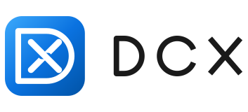
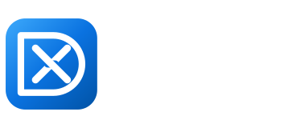
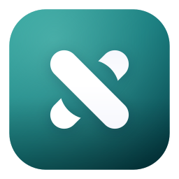

Brand assets · v0.1
DCX 品牌资源
标记语义：一扇窗口，底部浮着一条胶囊 dock —— 这正是 DCX 在做的事：接管 Explorer 外壳，把任务栏重塑成胶囊。应用图标、托盘图标与矢量标志均从同一套几何参数导出。
主标志
横向组合：标记 + 自绘几何字标。字标已转为路径，不依赖任何系统字体。


标记变体
彩色用于应用图标；单色版用于单色印刷、水印与需要跟随文字颜色的场景。

主标记 · 浅底
主标记 · 深底
单色（currentColor）
尺寸阶梯
16 / 20 px 使用简化版：去掉内部胶囊、加粗外框——否则三个白区在 20px 会糊成一团。这也是写进 dcx.ico 的实际内容。
托盘图标
去掉底色块，只留标记本体，才能在通知区里和系统图标并排站住。深浅两套分开提供：tray-*-on-light.png / tray-*-on-dark.png。
 浅色任务栏
浅色任务栏
 深色任务栏
深色任务栏
色板
蓝色族直接取自设置窗口的 Win11 强调色 #005FB8，保证图标与界面同源。
构成参数
所有尺寸都由同一组比例导出（单位为 tile 边长 T 的比例），几何定义在 tools/gen_brand.py 中，可一键重生成全部资源。
| 元素 | 比例 | 说明 |
|---|---|---|
| 画布留白 | 0.055 | 四边透明边距，占画布边长 |
| 图块圆角 | 0.215 T | 现代圆角方块 |
| 窗口外框 | 0.665 T × 0.575 T | 描边 0.072 T，圆角 0.105 T |
| 胶囊 dock | 0.420 T × 0.100 T | 距内框底边 0.072 T |
| 小尺寸简化 | ≤ 20 px | 外框加粗到 0.105 T，去掉 dock |
不要这样用
文件清单
| 文件 | 用途 |
|---|---|
dcx.ico | exe 图标，含 16/20/24/32/40/48/64/128/256 九个尺寸（<128 为 32-bit BMP，128+ 为 PNG 压缩） |
icons/dcx-*.png | 16–1024 px 位图，用于商店页、文档、网页 |
mark.svg / mark-mono.svg | 矢量标记（渐变版 / 单色版） |
wordmark.svg | 纯字标，已转路径 |
logo-horizontal.svg / -dark.svg | 横向组合标志，浅底 / 深底 |
tray/tray-*-on-*.png | 通知区图标，16/20/24/32/48 × 深浅两套 |
banner.png | README / 文章头图 |
../tools/gen_brand.py | 生成脚本，改参数即可重出全套 |